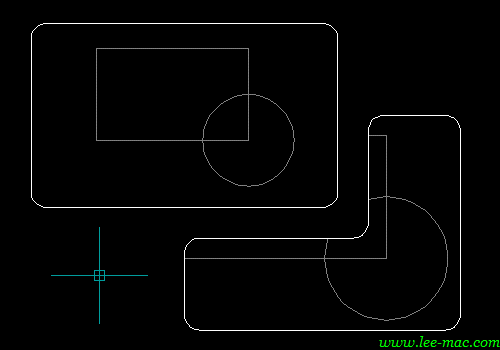

Viewport Outline
This page is delivered for consistency purposes only, as part of the LeeMac sample module of DynALisp, which shows how DynALisp turns existing AutoLISP programs into a module. The program and its description are the work of Lee Mac, who keeps all the credit for them. The original page, with the latest version, is on Lee Mac's website: https://lee-mac.com/vpoutline.html
| Function Syntax | LM-ViewportOutline – original syntax: VPO / VPOL / VPOA (see aliases) |
| Current Version | 1.3 |
| Compatible with AutoCAD for Mac? | No |
| Compatible with AutoCAD LT? | Yes |
| Original Page | lee-mac.com/vpoutline.html |
Program Description
This program allows the user to automatically generate polylines in modelspace representing the outline of a selected paperspace viewport, all viewports in the active paperspace layout, or all viewports found in all paperspace layouts.
The program offers three custom commands:
Outline Selected Viewport (VPO)
This command is only available in paperspace (that is, when a layout tab other than the Model tab is the current layout, and no viewports are active). Upon issuing the command syntax VPO at the AutoCAD command-line, the user is prompted to select a viewport for which to construct the viewport outline in modelspace.
Following a valid selection, the boundary of the selected viewport is transformed appropriately to account for the position, scale, rotation, & orientation of the modelspace view displayed through the selected viewport, and a 2D polyline (LWPolyline) representing this transformed boundary is constructed in modelspace.
Outline All Viewports in the Active Layout (VPOL)
This command is also only available in paperspace and, upon issuing the command syntax VPOL at the AutoCAD command-line, the program will automatically acquire & generate an outline for all viewports found in the active paperspace layout.
The user is notified at the command-line if no viewports are found in the active paperspace layout.
Outline All Viewports all Layouts (VPOA)
Upon issuing the command syntax VPOA at the AutoCAD command-line, the program will automatically acquire & generate an outline for all viewports found in all paperspace layouts of the active drawing.
The user is notified at the command-line if no viewports are found in any paperspace layout.
The program is compatible for use with all Rectangular, Polygonal & Clipped Viewports (including those with Arc segments), and with all views & construction planes.
The program also offers the ability to optionally offset the polyline outline to the interior of the viewport boundary by a predetermined number of paperspace units specified in the 'Program Parameters' section of the program source code.
The program may also be configured to automatically apply a predefined set of properties (e.g. layer, colour, linetype, etc.) to the resulting polyline outline - these properties are also listed within the 'Program Parameters' section of the source code.
Demonstration
In the following demonstration, the program has been configured to offset the outline by 2 units, and place the result on a separate layer.

Bundled program notes
;;-----------------------=={ Viewport Outline }==-----------------------;;
;; ;;
;; This program allows the user to automatically generate a polyline ;;
;; in modelspace representing the outline of a selected paperspace ;;
;; viewport. ;;
;; ;;
;; The command is only available in paperspace (that is, when a ;;
;; layout tab other than the Model tab is the current layout, and no ;;
;; viewports are active). ;;
;; ;;
;; Upon issuing the command syntax 'VPO' at the AutoCAD command-line, ;;
;; the user is prompted to select a viewport for which to construct ;;
;; the viewport outline in modelspace. ;;
;; ;;
;; Following a valid selection, the boundary of the selected viewport ;;
;; is transformed appropriately to account for the position, scale, ;;
;; rotation, & orientation of the modelspace view displayed through ;;
;; the selected viewport, and a 2D polyline (LWPolyline) representing ;;
;; this transformed boundary is constructed in modelspace. ;;
;; ;;
;; The program is compatible for use with all Rectangular, Polygonal & ;;
;; Clipped Viewports (including those with Arc segments), and with all ;;
;; views & construction planes. ;;
;; ;;
;; The program also offers the ability to optionally offset the ;;
;; polyline outline to the interior of the viewport boundary by a ;;
;; predetermined number of paperspace units specified in the ;;
;; 'Program Parameters' section of the program source code. ;;
;; ;;
;; The program may also be configured to automatically apply a ;;
;; predefined set of properties (e.g. layer, colour, linetype, etc.) ;;
;; to the resulting polyline outline - these properties are also ;;
;; listed within the 'Program Parameters' section of the source code. ;;
;; ;;
;;----------------------------------------------------------------------;;
;; Author: Lee Mac, Copyright © 2015 - www.lee-mac.com ;;
;;----------------------------------------------------------------------;;
;; Version 1.0 - 2015-01-02 ;;
;; ;;
;; - First release. ;;
;;----------------------------------------------------------------------;;
;; Version 1.1 - 2016-08-11 ;;
;; ;;
;; - Program modified to account for polygonal viewports represented ;;
;; by 2D (Heavy) Polylines. ;;
;;----------------------------------------------------------------------;;
;; Version 1.2 - 2017-09-03 ;;
;; ;;
;; - Added the ability to specify an optional interior offset ;;
;; (relative to Paperspace Viewport dimensions). ;;
;; - Added default polyline properties. ;;
;;----------------------------------------------------------------------;;
;; Version 1.3 - 2019-08-12 ;;
;; ;;
;; - Restructured program as a main function accepting a viewport ;;
;; entity argument. ;;
;; - Added two additional custom commands: ;;
;; - 'vpol' - outlines all viewports in the active Paperspace layout ;;
;; - 'vpoa' - outlines all viewports in all Paperspace layouts ;;
;;----------------------------------------------------------------------;;
;;----------------------------------------------------------------------;;
;; VPO - Outline a selected viewport in the active Paperspace layout ;;
;;----------------------------------------------------------------------;;
Command Names And Aliases
As in every DynALisp module, each program of this sample module has one main command, named LM-*, and the original command names of Lee Mac's page are kept as its aliases: they run the same command, and can be added, renamed or removed in Dyl-Suite (saved in Resources\Aliases.csv). The rows marked ↳ are child commands of LM-ViewportOutline: they are run by their alias, or picked from LM-ViewportOutline when it lists them (their command is named Pst-*).
| Command | Aliases | Name |
|---|---|---|
| LM-ViewportOutline | VPO | Viewport Outline |
| ↳ VPOL | – | Viewport Outline Layout |
| ↳ VPOA | – | Viewport Outline All |